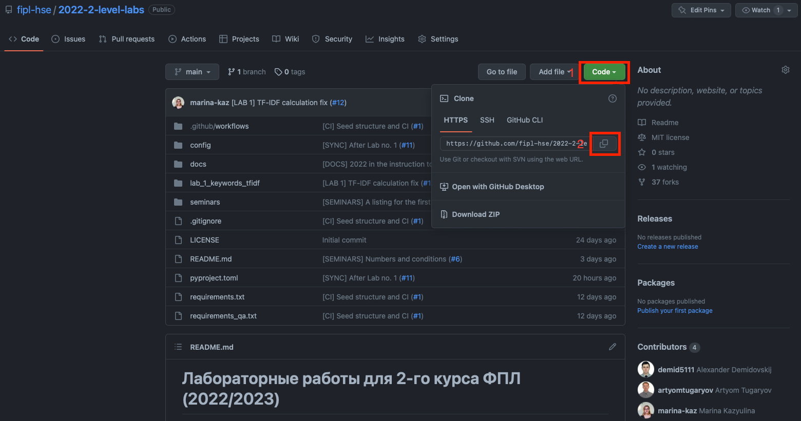
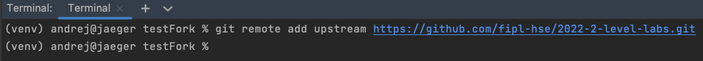
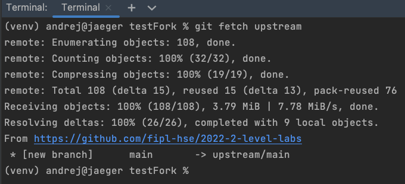
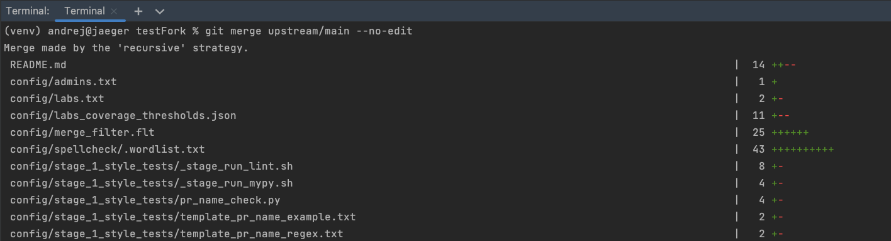

Обновление форков студентов
Обновление форков с помощью скрипта
В течении курса в основной репозиторий добавляются лучшие реализации лабораторных работ студентов путём мержа пул реквеста студентов. Эти изменения приводят к мёрж конфликтам у студентов и их необходимо исправить путём мержа основного репозитория в форки студентов. Однако, не все студенты сдают лабораторные во время и обновление для таких студентов и студентов, сдавших лабораторные работы, должны производиться по разным стратегиям: 1. Сдавшим студентам (winners) вливаются лучшие реализации из основного репозитория 2. В форках несдавших студентов (losers) необходимо оставить их реализацию для дальнейшей сдачи лабораторной 3. В форках сдавших студентов, которые проявили желание повысить оценку, необходимо также оставить их реализацию
Для автоматизации процесса обновления форков может быть
использован скрипт config/github/update_forks.py
и конфигурационный файл config/github/update_fork_config.json.
Управление стратегиями обновлений осуществляется через конфигурационный файл:
Стратегия 1 обновления сдавших студентов (winners) настраивается в конфигурационном файле
в поле winners.
Поле forks заполняется списком форков сдавших студентов:
"winners": {
"forks": [
"https://github.com/artyomtugaryov/2024-2-level-labs"
]
Например, студенты сдали лабораторную работу lab_1_classify_by_unigrams.
Как правило, сдавшим студентам необходимо добавить лучшую реализацию сданной лабораторной работы,
вместо их собственной реализации
В таком случае в поле upstream секции pathsToKeep необходимо указать локальные пути до файлов,
версии которых будут взяты главного репозитория, a поле fork необходимо оставить пустым:
"winners": {
"forks": [
"https://github.com/artyomtugaryov/2024-2-level-labs"
],
"pathsToKeep":{
"fork": [
],
"upstream": [
"lab_1_classify_by_unigrams"
]
}
}
Для студентов, которые не сдали лабораторную работу предназначена секция losers.
В ней также необходимо указать все форки не сдавших студентов.
В поле fork в секции pathsToKeep необходимо указать локальный путь до несданной лабораторной работы:
"losers": {
"forks": [
"https://github.com/demid5111/2024-2-level-labs"
],
"pathsToKeep":{
"fork": [
"lab_1_classify_by_unigrams"
],
"upstream": [
]
}
}
Также для обновления форков студентов необходимо указать имя пользователя,
от которого будет сделан и запушен коммит, а также указать токен,
сгенерированый на github по инструкции из <creating-pat>.
Для успешного обновления токен можно сгенерировать с разрешениями repo и workflow.
Имя пользователя и токен указываются в соответствующие поля конфигурационного файла.
Также необходимо указать ссылку на основной репозиторий:
"authentication": {
"user": "artyomtugaryov",
"token": "ghp_mysecrettoken"
},
"upstream": "https://github.com/fipl-hse/2024-2-level-labs"
После заполнения конфигурационного файла необходимо запустить скрипт для обновления:
fiplconfig.update_forks --config config/github/update_fork_config.json
Обновление форка вручную студентом
Чтобы добавить изменения в форк из основного репозитория, выполните следующие шаги:
Откройте сайт публичного репозитория.
Нажмите кнопку
Code, выберитеHTTPSи нажмите кнопку копирования:
Откройте терминал в среде разработки Visual Studio Code:
Терминал можно открыть нажатием кнопки Terminal -> New Terminal в верхней панели или сочетанием клавиш
Ctrl + `.В терминале выполните команду
git remote add upstream <ссылка-на-основной-репозиторий>:
В терминале выполните команду
git fetch upstream:
Important
Обратите внимание, что ссылка на скриншоте выше указывает на родительский репозиторий.
В терминале выполните команду
git merge upstream/main --no-edit:
Note
В зависимости от количества изменений вывод команды может отличаться от того, что на скриншоте выше.
В результате выполнения этих команд в локальном форке появятся последние изменения из основного репозитория.
Больше информации о командах, описанных выше, можно найти в официальной документации по Git.